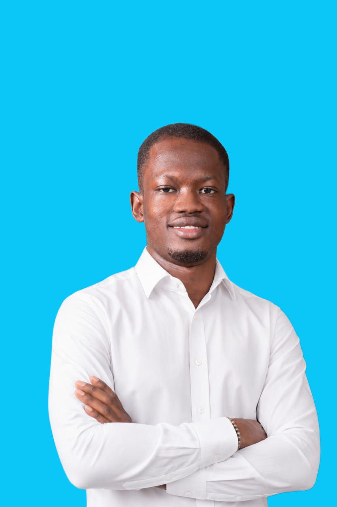
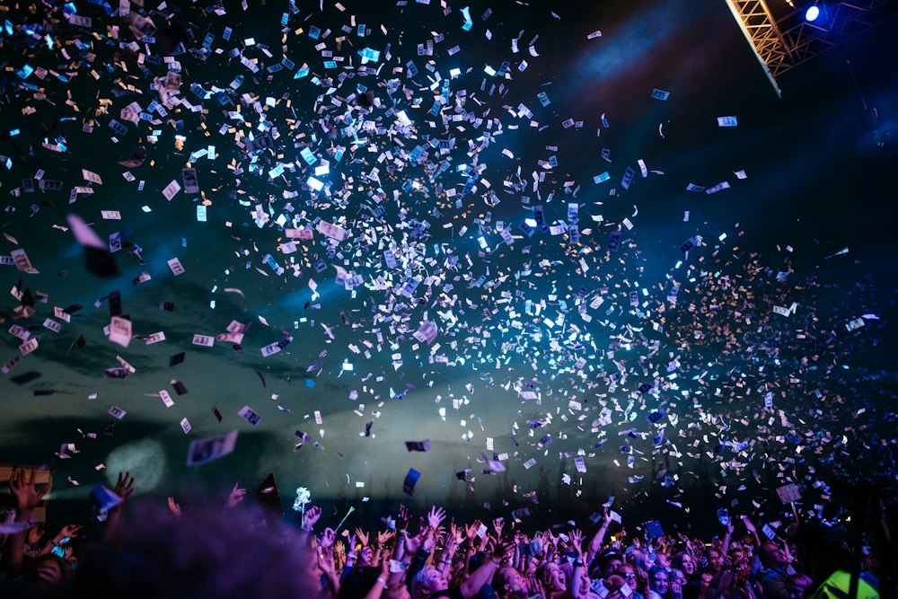
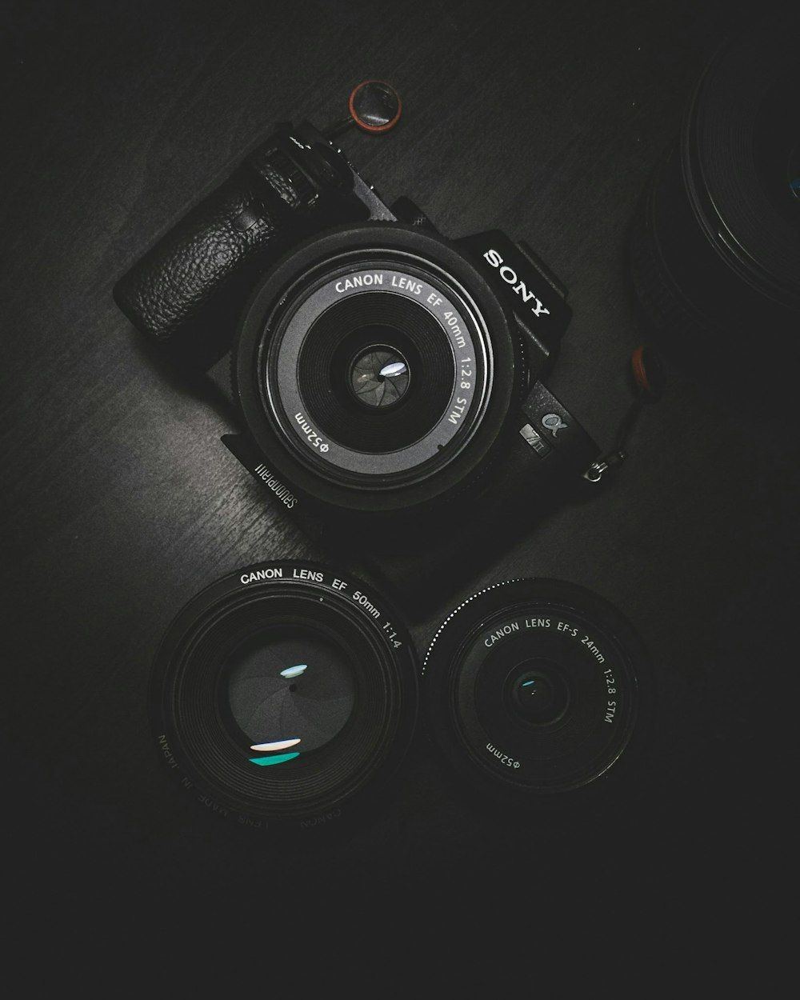
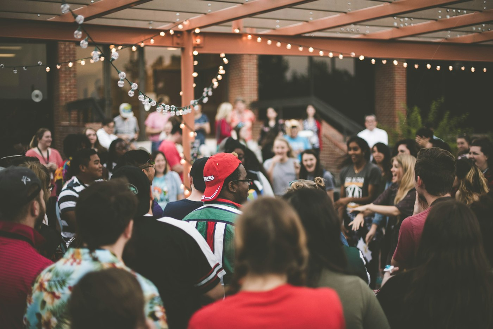
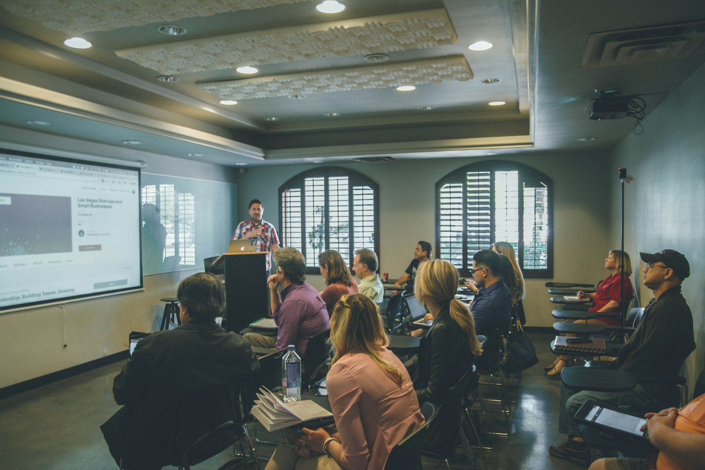
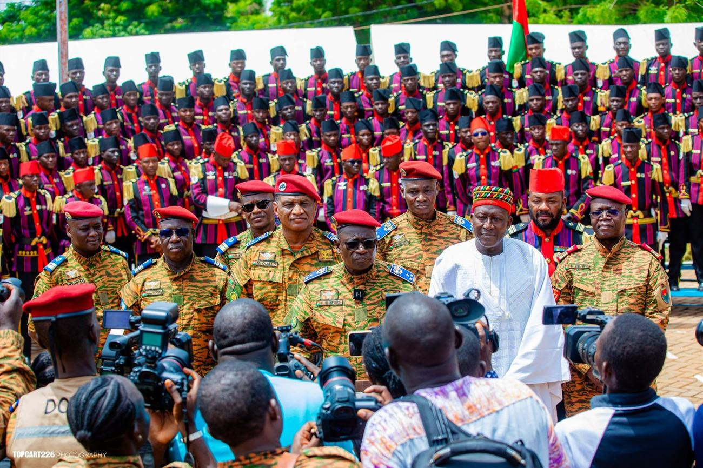
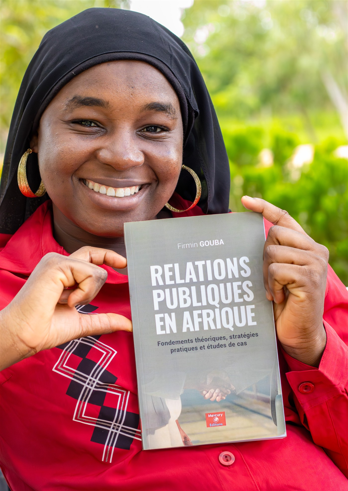

Production
100%
Du concept au montage final
Tournage, réalisation, étalonnage et livraison dans les formats adaptés à chaque canal.
Voir le détail →ARISTIDE CÉDRIC BASSOLÉ — PHOTOGRAPHE · VIDÉASTE · FACILITATEUR
J'aide entreprises, ONG et institutions à transformer leurs idées en films, reportages et récits visuels qui font parler d'elles — du concept au montage final. Un seul interlocuteur, de l'image à l'impact.

Ce que je mets sur la table : une approche complète, du cadre à la diffusion.
Du concept au montage final
Tournage, réalisation, étalonnage et livraison dans les formats adaptés à chaque canal.
Voir le détail →Au service des jeunes
Facilitation, leadership et ateliers de soft skills avec AIESEC in Burkina Faso.
Voir le détail →Expertises complémentaires
Photo, vidéo, storytelling et facilitation — un seul interlocuteur pour tout.
Voir le détail →Quatre domaines, une même exigence : produire un travail utile et maîtrisé.
Capturer l'instant juste


+6Prouvé par 10 projets
Du tournage au montage


+4Prouvé par 8 projets
Donner du sens à l'image
 +3
+3Prouvé par 5 projets
Transmettre et fédérer
Prouvé par 6 ateliers
De l'image à la transmission, un accompagnement complet sans multiplier les intermédiaires.
Discuter de votre besoin →Films commerciaux, reportages et contenus pour réseaux sociaux, pensés pour votre audience et votre canal de diffusion.
Ce que ça change : vous obtenez un contenu clair, cohérent et prêt à être diffusé, sans repartir de zéro.
Portraits, couvertures d'événements et visuels d'identité qui donnent un visage à votre organisation.
Ce que ça change : vous disposez d'une banque d'images cohérente qui renforce votre présence et votre crédibilité.
Construire un récit qui crée de la confiance : donner une voix et un visage à votre projet, votre marque ou votre cause.
Ce que ça change : votre message devient mémorable et vos publics s'identifient à ce que vous portez.
Formations en leadership et soft skills, animation de groupes et accompagnement d'équipes multiculturelles.
Ce que ça change : vous renforcez l'autonomie et la confiance de vos jeunes, avec des acquis qui durent au-delà de l'atelier.
On clarifie le besoin, l'audience et l'objectif avant de sortir l'appareil.
Périmètre & prioritésTournage ou prise de vue, avec un œil sur l'usage final dès la première image.
ProductionMontage, étalonnage et formats adaptés : un travail prêt à servir.
Fichiers finauxRetours et itérations pour affiner ce qui fait vraiment la différence.
Bilan & suiteDes projets réels et une sélection de ce que je produis au quotidien. Les autres visuels restent des démonstrations.


✓ Projet réelReportage photo pour préparer le bookcamp des amis de la Foire Internationale du Livre de Ouagadougou : portraits et moments de partage autour du livre, de la lecture et de la communication en Afrique.
Capturer l'énergie d'un moment et la restituer en un film qui donne envie d'y être.
Des images qui racontent le terrain, les visages et les moments qui comptent.
Une banque d'images cohérente qui donne un visage et une voix à votre organisation.
Animer des groupes de jeunes et transmettre des compétences qui durent au-delà de la séance.
Décrivez-le en quelques lignes : je vous réponds sous 24h avec un avis concret.
Photographe & vidéaste indépendant
Je combine un regard d'image, une exigence de terrain et une vraie envie de transmettre pour transformer une idée en contenu utile, sans perdre de temps dans le flou.
J'interviens sur la photographie, la vidéographie et le récit visuel pour entreprises, ONG et institutions. Ma double casquette de facilitateur chez AIESEC me permet aussi d'animer des ateliers de leadership et de développement personnel pour les jeunes. Basé au Burkina Faso, je collabore sur des projets locaux et internationaux.
Chercher ce qui doit exister pour créer de la valeur, pas ce qui impressionne en premier.
Aller vite avec une base lisible et solide, pensée pour évoluer.
Garder un lien direct entre ce qu'on crée, ce qu'on mesure et ce que ça change.
Engagé chez AIESEC in Burkina Faso, présent dans plus de 100 pays.
Espaces prêts à recevoir vos vrais retours clients — remplacez le texte et le nom des trois cartes.
“À compléter — décrivez en une phrase le résultat que ce client a obtenu grâce à votre travail.
“À compléter — un retour sur votre manière de travailler, votre regard ou votre fiabilité.
“À compléter — ce qui a fait la différence sur le projet (délai, qualité, impact).
Décrivez vos besoins et je reviens vers vous sous 24h avec une proposition claire.